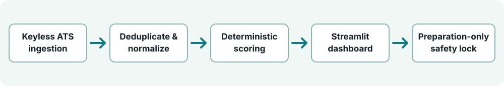

Pillar 3 · Workflow Automation
Autonomous Job Search Engine
A local-first job discovery prototype built with Python source adapters, deterministic matching, a Streamlit review interface, and preparation-only safety controls. Final applications remain manual.
Autonomous Discovery & Ingestion Pipeline
The local pipeline can retrieve supported public listings, normalize and deduplicate them, score matches, and present opportunities for manual review. Scheduled unattended operation is not independently verified:

- 1. Public-Source IngestionRegistered adapters cover Greenhouse, Lever, Ashby, Himalayas, Remotive, and Arbeitnow; a separate parser reads Schema.org structured data. Adzuna is a stub, not an operational connector. Live reliability varies by source and has not been established here.
- 2. Schema Normalization & DeduplicationIngestion pipelines normalize disparate JSON response payloads into strongly-typed Python dataclasses. Generates deterministic SHA-256 fingerprint hashes across company, title, and location attributes to prevent duplicate records across recurring runs.
- 3. Deterministic Multi-Factor ScoringEvaluates candidate resumes against normalized job requirements using rule-based algorithmic scoring: job title similarity, technical skill taxonomy extraction, minimum years of experience checks, and negative keyword filtering (security clearance, visa sponsorship exclusions).
- 4. Streamlit Interactive Analytics DashboardRich, locally-hosted web interface providing real-time feed exploration, score threshold filters, keyword search, match score distribution histograms, and direct application preparation toolkits.
- 5. Safety Guardrails & Preparation Hard-LockArchitecturally enforces a strict
PREPARATION_ONLYboundary. Generates tailored cover letter drafts, interview talking points, and direct portal links, but explicitly forbids autonomous submission or bot-driven form filling, keeping human judgment in control.
Engineering Philosophy & Architectural Trade-offs
Source Adapters and Structured Data
Current design: Source-specific adapters parse supported public feeds, while a separate Schema.org parser reads structured job data. Adzuna is present as a stub.
Limit: Connector registration and mocked tests do not establish live reliability, throughput, or support for every employer board.
Deterministic Matching
Decision: Built a multi-criteria deterministic scoring matrix in pure Python rather than passing every job description to an external commercial LLM.
Rationale: Rule-based scores can be inspected and tested without an external model call. Processing speed and live-source coverage require separate measurement.
Test Evidence and Operational Status
A current offline suite run collected 452 tests: 450 passed, 1 failed, 1 skipped. The failure is an end-to-end deterministic-score threshold assertion (31.2 versus expected 50.0), which needs correction in that project before claiming a clean suite. The skipped test requires Windows symlink privilege. Mocked connector checks do not verify live scheduled ingestion.